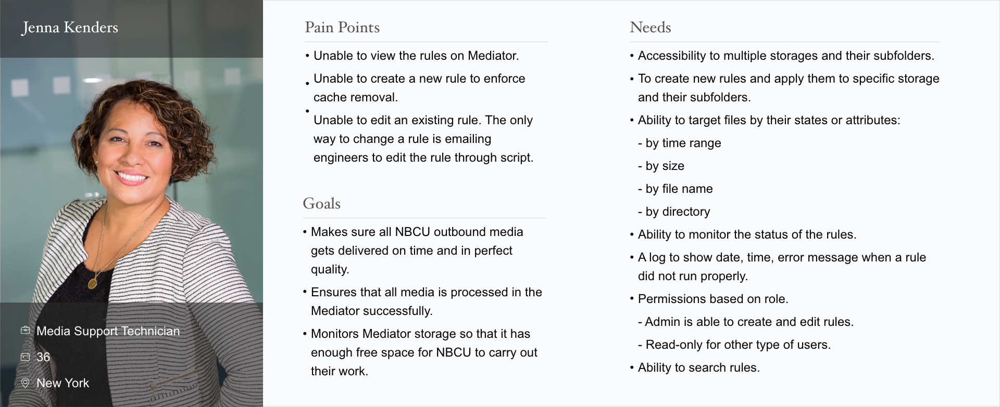
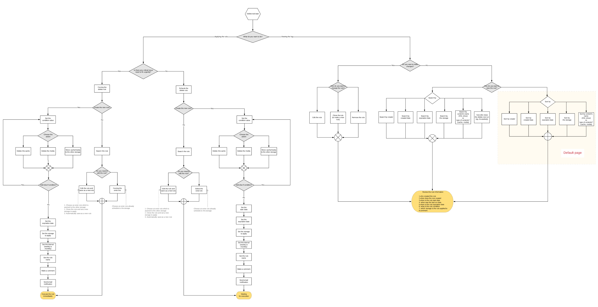
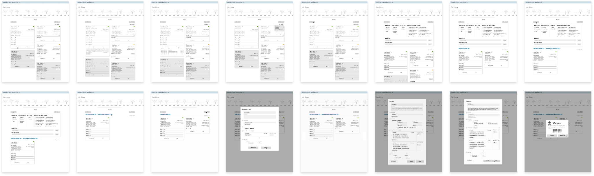

The Delete tool is a Mediator microservice which will manage the clean up of leftover iteration files to free
up storage space. Currently there is no user interface to do this, so back-end developers needs to code
scripts to delete the files. We are creating this new microservice to expedite the workflow by allowing
other users to delete files who aren't engineers.
User Types
• Media Support Technician (Primary)
• Mediator Support
• Engineer
How does it operate?
1. Creating rules to delete cache.
2. Operate the system with the rules.
3. Based on the rules, certain data will be deleted. The rule can target the particilar amount of
content, contents of certain states, storage device, the mix of contents and storage device.
Use Case
Managing and creating rules
By using the rule user created, they can manage and delete contents all accross websites.
Cleaning up leftover iteratio files
Some content will move to the long-term storage but at some point, these data won't need to be in certain
storage anymore. In this case, the Delete Tool will remove a certain amount of data based on the rule.
Using as archived files
Delete Tool could be the source to archived files. When data which need to be deleted, Delete Tool will
gather the files by rules and it could be an archive file itselfP
.
User Interview
We interviewed Addison, who is a Media Support Supervisor. She and her teammates are the primary users for
this application.
Role
• Has been with NBC Universal for five years.
• Supervising the media support department about two years.
• Acts as the bridge between operations and engineering.
• Suppots east coast, west coast mountains, and overseas such as Germany, London, and Arabia.
• Manage the mediator local library in Dry Creek.
Day-to-Day
1. Monitos the storage through Splunk dashboard.
2. If someone gets stuck with the peak levels, would run a software analysis tool to check where on the media
is hit.
3. The main objective throughout the day is checking any issues that come up and find out the reason.
4. To choose the best solution for the operation from a storage standpoint, usually is delete the media or
move the media to archive files.
Tool Used
• Splunk dashboard
• Storage monitoring tool
• Mediator X
• MS Outlook
• Jira
Interview Discovories
Goal
• Ability to view what rules are currently applied nd who created the rules.
Pain Points
Doesn't have access to view the delete rules.
Sometimes there are missing media, but can't check if the mediator deleted it or there was a rule in that
folder.
Wants
• Ability to view the rule in order to fix the issue quickly.
• Wants the Delete Tool to have different accesses. The admin can manipulate and create the rule, when other
type of users can only view the rule.
• A prompt when the delete rule is created.
• A log to check the time and person who create the rule.
• A description to understand the rule.
• A log to check the date when a rule was updated.
Persona

User Workflow

MVP

User Testing
We conducted a user testing session of the preliminary low-fidelity Delete-Tool mock-up with Addison, a Media
Support user. We walked him thourgh the proposed workflow in the UI while asking unanswered questions we
had.
Liked
• Being able to dived into multiple layers of sub-directories to apply rules.
• Ability to select more than one sub-directory to apply the rule.
• Identifiers for rule status - Active and Inactive.
• Rule cards have description to show what is happening.
• Ability to view all rules and filter them down based on certain criteria.
• Ability to edit rules.
• Metadata on the rule cards.
• When creating a new rule, as a default, a filtered directory is carried over as a selected option.
Not Liked
• The layout of the directories - 100s of sub-directory could exist in multiple layers - thus, it would be
difficult to display all on a page.
• The pre-set conditions to target files when creating rules is too limiting. Users should be able to
customize the watch days and add any number of conditions.
Wants
• Target file conditions to be customizable.
• Wants to dynamically set the repeat of scheduled rules.
• Warning message if attempting to delete files that are being used somewhere else.
Iteration
• We redesigned the folder selection to account for large directories with multple layers and hundreds of
sub-directories in each parent directory.
• Chaning the comment log to an error log to identify the cause of errors.


Copyright © 2019 chisuux | Chi Su | UI/UX Designer